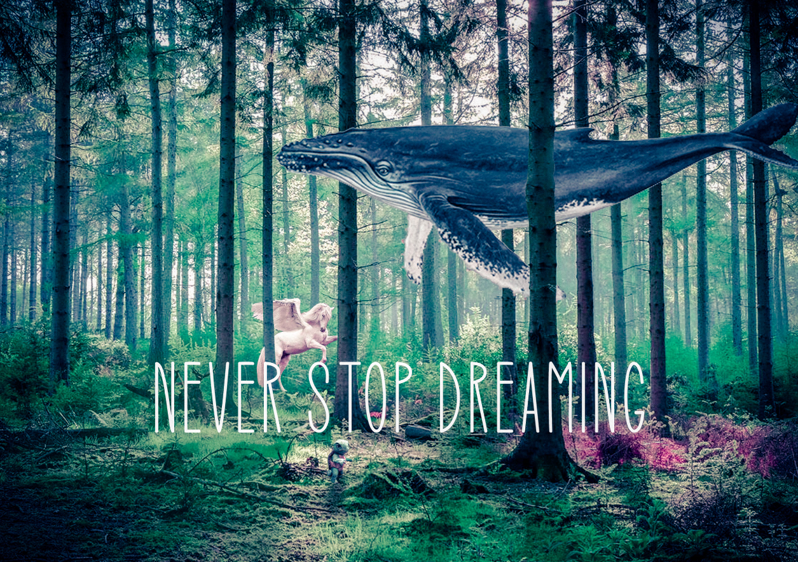
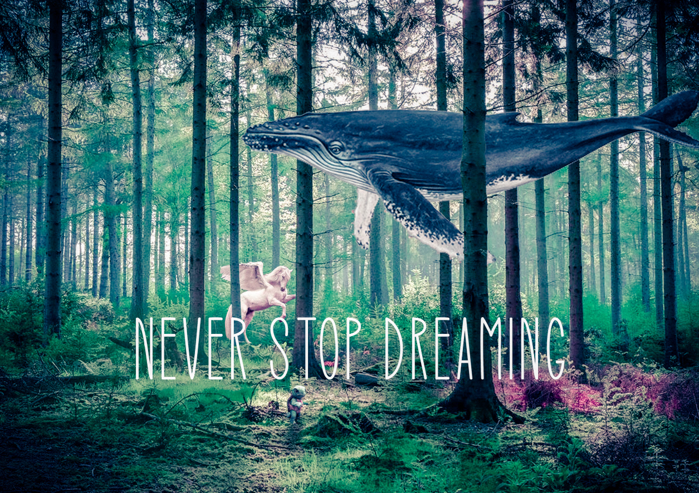
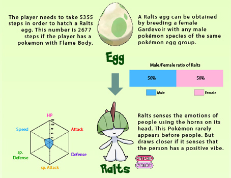
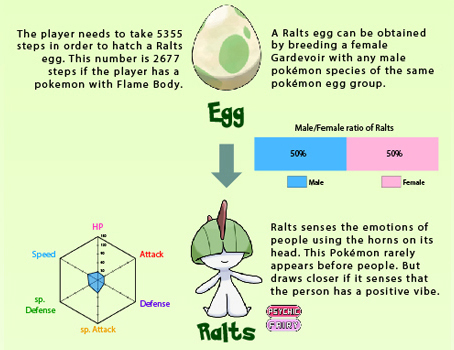
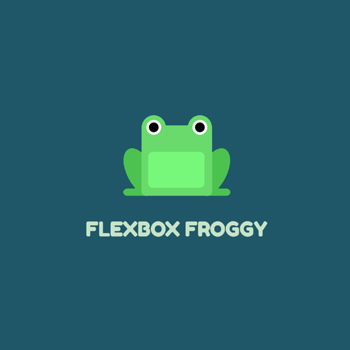
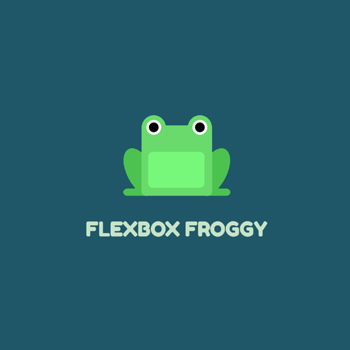
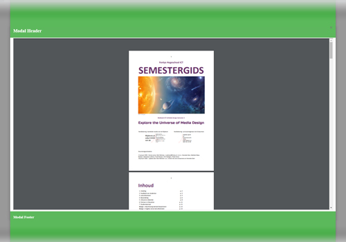
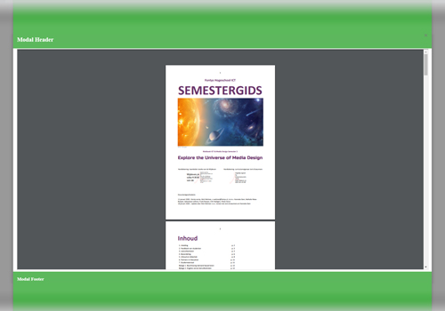

 

 

 



Je kunt wat muziek opzetten die ik erg leuk vind voor tijdens het lezen door op de play knop te drukken.
Ik ben Joep van Dijk, geboren op 15 oktober 1999. Ik ben opgegroeid in klein dorpje genaamd Venray. Ik hou enorm veel van sporten, zo doe ik boksen, rugby en cheerleaden. Ik ben erg close met mijn familie en vriendengroep en samen beleven we vaak leuke avonturen. Nadat ik mijn Havo afronde twijfelde ik veel over welke opleiding ik wou doen en wat voor toekomst ik wou hebben.
Voordat ik aan deze opleiding begon twijfelde ik nog over veel andere opleidingen zoals: docent biologie, rechten, fysiotherapie, psychologie en ook was ik aangenomen bij de luchtmobiele eenheid van defensie na het doorstaan van een zware testperiode. Ik heb uiteindelijk toch voor ICT gekozen omdat deze opleiding enorm breed is en ik hier kan uitzoeken waar mijn echte passie ligt. Gaande dit jaar heb ik enorm veel geleerd en veel vrienden gemaakt. Elke dag leer ik steeds meer nieuwe dingen en zie ik nieuwe mogelijkheden voor mijn toekomst. Zo leer ik steeds meer over mezelf, mijn interesses en het pad dat ik wil belopen in mijn toekomst.
Voordat ik aan deze opleiding begon had ik geen enkele ervaring met ICT. Ik wist amper hoe ik een laptop aan moest zetten maar ik heb me vantevoren verdiept in laptops zodat ik tenminste de juiste kon kopen. Met mijn Havo diploma en interesse in Biologie ging ik dit avontuur aan. Ik merkte meteen dat deze opleiding je leert om erg zelfstandig te zijn en zelf dingen uit te zoeken. Gekukkig had ik een erg zelfstandige houding meegekregen vanuit huis.
In het begin van deze opleiding was ik erg onzeker omdat ik naast mensen stond die al jarenlang in de ICT zaten en alles wisten. De eerste dag van deze opleiding zeiden de docenten ook: "Begin maar een beetje met coderen en zie waar je komt" terwijl ik nog nooit van een code editor of iets dergelijks gehoord had. Door enorm veel tijd hierin te stoppen leerde ik al snel dat ik met een logische denkwijze heel ver kom in programmeren. Ik kende niets van de syntax van programmeertalen maar kon toch de mensen met meer ervaring helpen door te zeggen hoe iets in elkaar moest zitten, deze mensen wisten de syntax en ik had de logische denkwijze. Op deze manier vormde ik een goede combo met mensen die ik nu bijna mijn beste vrienden kan noemen en hebben we enorm veel van elkaar geleerd
Ik begon aan deze opleiding zonder enkele ervaring of idee wat ik wou voor mijn toekomst. Ik heb geleerd dat door een goede inzet, interesse en motivatie dit steeds duidelijker word. Elke dag leer ik weer iets nieuws en zie ik nieuwe mogelijkheden.
Ik heb een interesse ontwikkeld voor het bedenken van games en het maken van designs met Illustrator en Photoshop. Ook vind ik het erg leuk om steeds meer te leren over Html, Css en Javascript. Ook heb in een interesse ontwikkeld voor het opnemen en bewerken van video's. Ik heb onderzoek gedaan naar de behind the scenes van populaire films en het lijkt me enorm gaaf om ooit te werken op een set van een film. Ook heb ik een stiekeme droom om ooit bij the Pokémon Company te werken als game designer. Mijn interesses zijn dus erg breed en ik moet nog veel leren voordat mijn pad duidelijker word, maar door mijn inzet komt dit elke dag dichterbij.
Ik hou er van om creatief bezig te zijn, als media designer maar ook als persoon. Als media designer ben ik enorm geïnteresseerd in het maken van mooie afbeeldingen en video's, daarom leek deze specialisatie ideaal voor mij. Deze specialisatie past perfect bij mijn interesses en mijn professional identity als media designer. Nadat ik klaar ben met deze specialisatie heb ik geleerd om te werken met programma's zoals Illustrator, Photoshop, Premier Pro, Indesign en After Effects. Ook weet ik hoe ik tekst en beeld kan combineren, hoe ik bewust kleuren, fonts en posities kies en hoe ik dit ook goed beargumenteer en documenteer. Dit zijn skills die ik heel mijn professionele cariëre zal gebruiken.
Opdracht MediatechniekenIk heb hieronder de eindresultaten gezet van de opdrachten die typisch bij mij passen als Media Designer. Dit zijn de opdrachten waar ik trots op ben, waar ik blij van word, waar ik graag aan werk en die voorstellen wat ik wil bereiken. Dit zijn de opdrachten die typisch bij mij passen en waar ik me in mijn toekomst verder in wil verdiepen. Klikt op een afbeelding voor de link naar de opdracht.